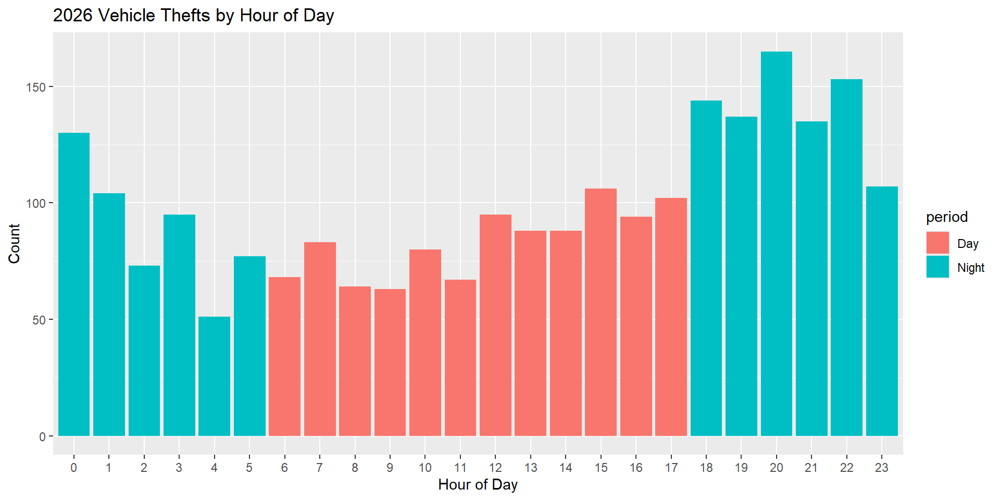
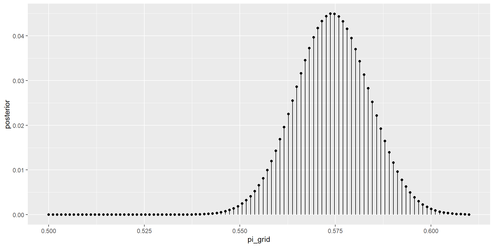
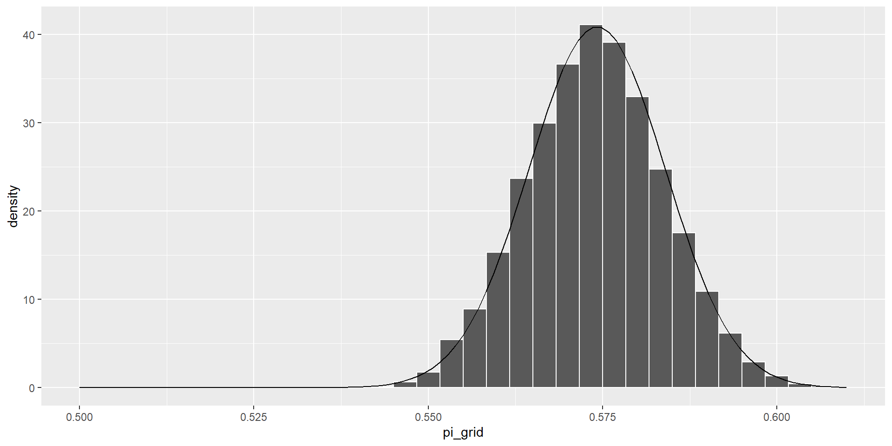
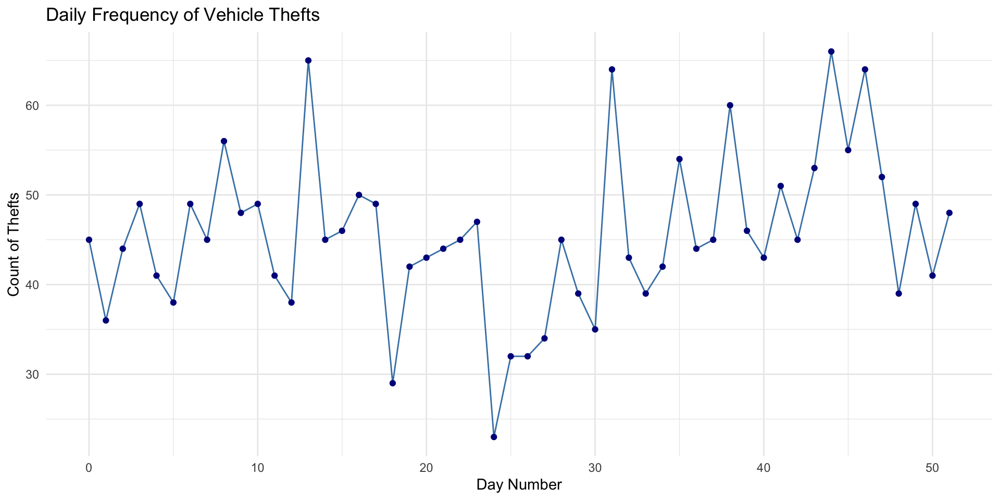
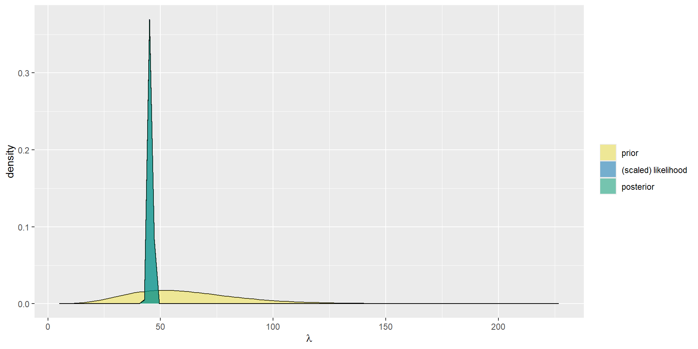
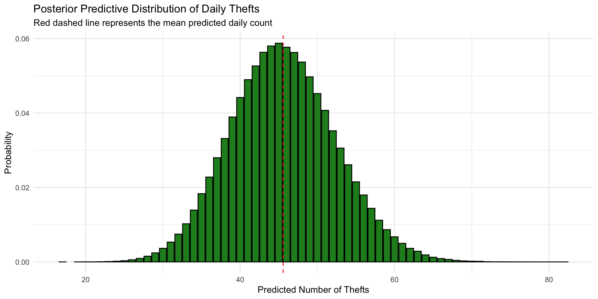
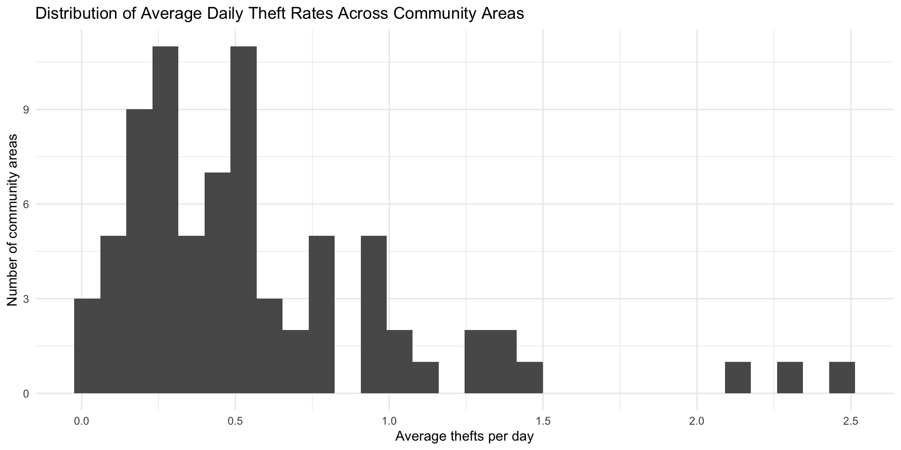
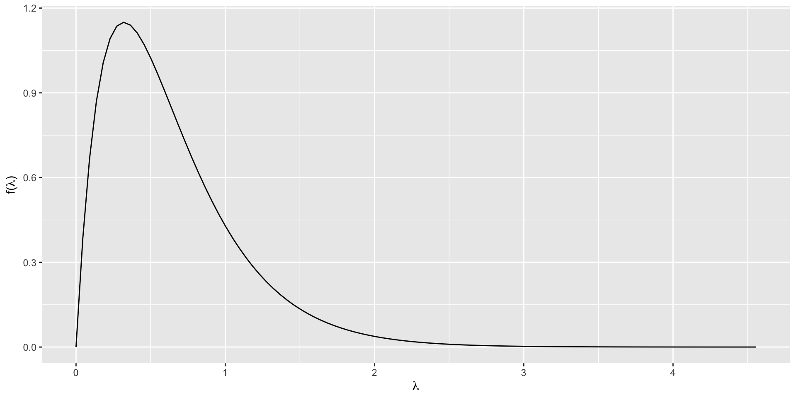
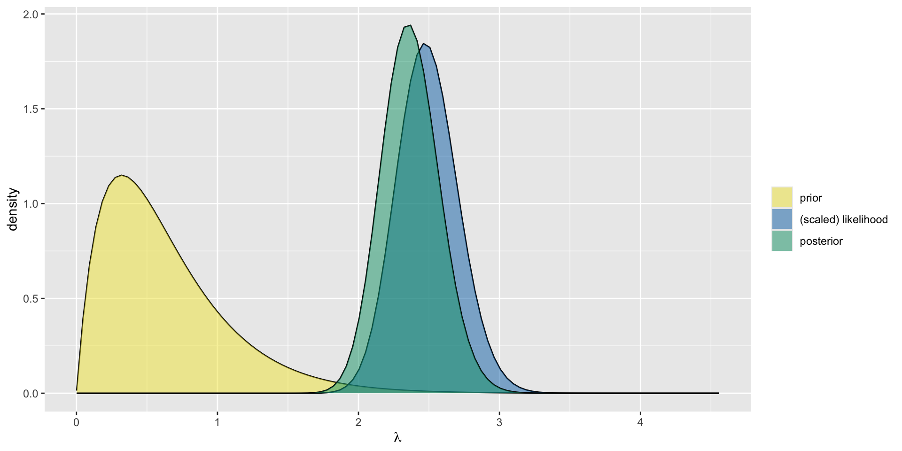
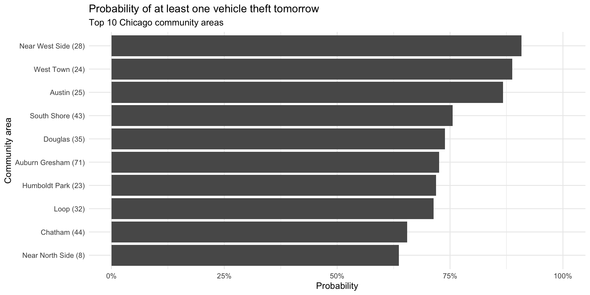

To explore the susceptibility of vehicles in Chicago we investigate the following:
What is the probability that a vehicle theft in Chicago occurs at night? (night = between 6pm and 6am)

[1] 1371

\(\pi | y = 0.574\)
The probability that a vehicle theft occurs at night is approximately 0.574
Looking at the data from the first 52 days of the year, how many vehicles will be stolen tomorrow?

From the plot the counts don’t seem to follow a trend, so we assume that:
The number of cars stolen on days are independent
Can be modeled using an identical poisson distribution with an average rate parameter \(\lambda\)
\[ Y_i|\lambda \sim Poisson(\lambda) \]
The rate can be modeled using a Gamma distribution
\[ \lambda|Y\sim Gamma(\alpha,\beta) \]
Annual car theft rate in Chicago is 8.25 for every 1000 people
Total of 22,440 total stolen cars per year in Chicago, an average daily rate of 61.44
For the variance of the rate, the monthly 5 year counts range from 630 to 3186
A average daily rate range of 21 to 106 from which we can construct a prior
\[ Gamma(6.2116,0.1011) \]
Using the gamma-poisson model makes use of the gamma conjugate prior resulting in the following posterior:
\[ Gamma(6.2116 + \Sigma y_i,0.1011+n) = Gamma(2373.2116, 52.1011) \]

From the posterior we can estimate the actual number of cars stolen tomorrow
2.5% 97.5%
33 59 With 95% probability a number between 33 and 59 cars will be stolen.

The most likely value is 45 with a probability of 0.059. On average we should see the rate of 45.57 cars stolen per night and a 50% chance of having less than or equal to 45 cars stolen.
Which Chicago community areas have the highest probability of at least one motor vehicle theft tomorrow?

Daily thefts in community area \(j\) are modeled as
\[ Y_{jt} \sim \text{Poisson}(\lambda_j) \]
June 2025: about 1,473 vehicle thefts in Chicago \(\Rightarrow\) about 49 thefts per day citywide
With 77 community areas, the baseline rate is
\[ \frac{49}{77} \approx 0.64 \]
We use this baseline to construct a Gamma prior for the daily theft rate in each area.
We use this baseline to define a prior for the daily theft rate
\[
\lambda_j \sim \text{Gamma}(2, 2/0.64)
\]

Mean of prior:
\[ \frac{2}{2/0.64} = 0.64 \]
For each community area \(j\), we observe daily theft counts over \(T\) days
Let \(y_j\) be the total number of thefts in that area
We model the data as
\[ Y_{jt} \mid \lambda_j \sim \text{Poisson}(\lambda_j) \]
Aggregating over time, the likelihood becomes
\[ L(\lambda_j \mid y_j) \propto \lambda_j^{y_j} e^{-T\lambda_j} \]
With a Poisson likelihood and Gamma prior, the posterior is also Gamma:
\[ \lambda_j \mid \text{data} \sim \text{Gamma}(\alpha + y_j,\ \beta + T) \]
Here:
# A tibble: 1 × 6
community_area total_thefts days_observed posterior_mean ci_80_lower
<dbl> <int> <int> <dbl> <dbl>
1 28 131 53 2.37 2.11
# ℹ 1 more variable: ci_80_upper <dbl>
For Area 28, the posterior mean is about 2.37 thefts per day, and the 80% credible interval is approximately 2.11 to 2.64.
# A tibble: 10 × 3
community_area pred_mean prob_at_least_1
<dbl> <dbl> <dbl>
1 28 2.38 0.908
2 24 2.19 0.888
3 25 2.05 0.868
4 43 1.42 0.756
5 35 1.33 0.739
6 71 1.30 0.726
7 23 1.27 0.719
8 32 1.25 0.713
9 44 1.06 0.655
10 8 1.02 0.636
Near West Side (28) has the highest predicted risk: 90.8%
West Town (24) and Austin (25) follow at 88.8% and 86.8%
Theft risk varies substantially across Chicago neighborhoods.
(delete this later) Who will these results help in the future and how?
Help people protect their personal vehicles by being aware of dangerous times to leave vehicles unlocked or out
Help law enforcement enforce regulations to limit vehicle theft, such as increasing street lighting
Inform car insurance companies about risk especially in Chicago
(delete this later) If you had all the resources in the world and unlimited time what would you do on this topic? What are the limitations of the analysis you have done that you could correct in the future with unlimited resources?
No detailed insight outside of probability that a vehicle will be stolen at night. Want an hour-to-hour analysis
Investigate the number of stolen vehicles within each sector of the city for a given day with a hierarchical model